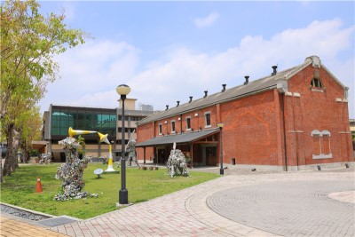
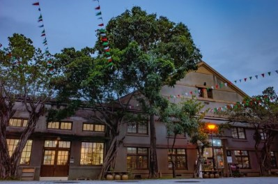
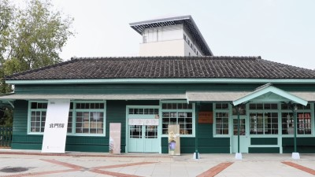
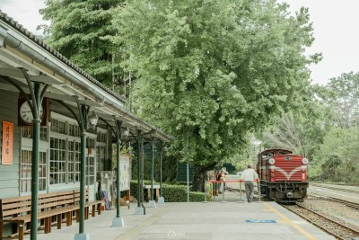
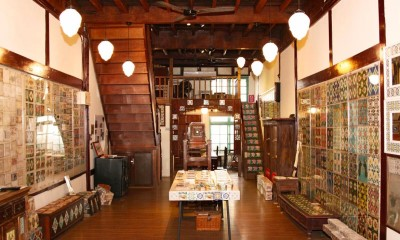
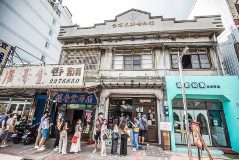

嘉義文化創意產業園區，位在臺灣嘉義市西區，是中華民國文化部所屬的文化創意產業園區之一。其建築原是過去的嘉義酒廠；在嘉義酒廠遷到嘉義縣民雄鄉新廠區後，這裡便被規劃成文創園區。在五大文創園區之中，面積是第三大，但以樓板面積來看則是最大。
資料來源：維基百科


北門驛最早是阿里山森林鐵路的起點車站，興建於明治43年（1910），車站建築全部以阿里山特有紅檜建材，是其特色。在未銜接縱貫鐵路嘉義車站之前，本站是阿里山森林鐵路蒸汽小火車的起點，也是阿里山鐵路貨運集散地，阿里山鐵路沿線的民生物資都由此運上山，地位相當重要。
資料來源：嘉義市紀錄庫 top


臺灣花磚博物館，是位於臺灣嘉義市西區一座以花磚為展示主題的私人博物館，其前身為「德豐材木商行」店主蘇友讓的故居，始建於台灣日治時期昭和13年。2014年，任職於科技業的徐嘉彬與一同從事花磚保護工作達20年經驗的工作團隊齊心買下老宅，將之改裝為花磚博物館，典藏花磚數量約達1500片，為臺灣首座以花磚為主題的博物館。
資料來源：維基百科 top

